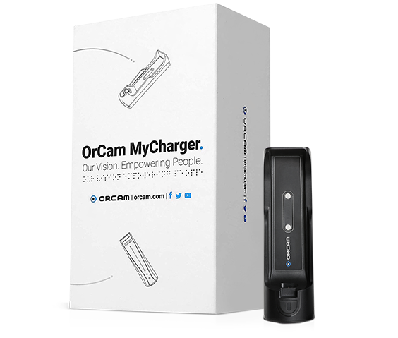
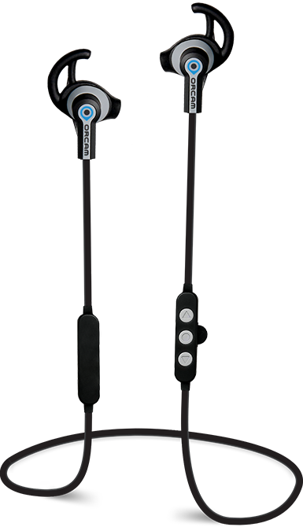

OrCam MyEye es un dispositivo revolucionario activado por voz que se acopla prácticamente a cualquier gafa. ¡Es capaz de leer instantáneamente el texto de un libro, la pantalla de un teléfono inteligente o cualquier otra superficie, reconocer rostros, ayudarle a comprar por su cuenta, trabajar más eficientemente y vivir una vida más independiente! OrCam MyEye transmite información visual de forma audible, en tiempo real y sin conexión a Wifi.
He elegido este dispositivo, porque permite que las personas invidentes pueden realizar cualquier tarea cotidiana gracias a ello, desde leer un cartel de la calle, hasta leer el periódico matutino, además tiene tecnología punta, lo que va a evitar que se quede obsoleto pronto.
Su power bank le permitirá cargar su dispositivo OrCam sobre la marcha, capaz de realizar 4 recargas con una sola carga.
Auriculares inalámbricos 100% compatibles con dispositivos OrCam. Escuche su dispositivo OrCam de forma privada, en lugares públicos o en casa.
